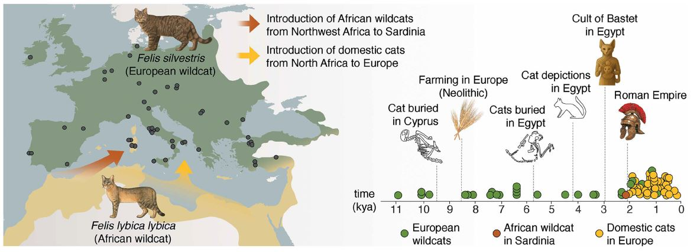
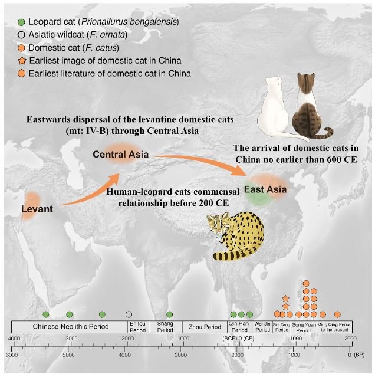

穿越千年的“喵”声：古DNA揭秘家猫征服欧亚大陆的隐秘往事
家猫（Felis catus）作为如今最常见的伴侣动物之一遍布全世界。家猫起源于非洲野猫（Felis lybica lybica），然而它们是究竟何时、如何进入不同的文明体系，其实一直存在争议。最近两篇分别发表在 Science[1] 和 Cell Genomics[2] 上的研究通过大规模古 DNA 测序与考古证据，为“家猫如何走向世界”给出了更清晰、也更出人意料的答案。
欧洲篇：迟到的“北非移民”
长期以来，人们普遍认为家猫是随着新时期时代的农业活动，从近东地区扩散到欧洲。但最新的古基因组分析挑战了这一观点，通过对 87 个古代和现代猫基因组的分析，科学家发现家猫并不是在新石器时代进入欧洲，而是在大约 2000 年前才从北非引入。过去被认为带有非洲野猫线粒体 DNA 的欧洲早期遗骸，实际上是与非洲野猫发生过杂交的欧洲野猫（Felis silvestris）。同时该研究揭示，存在两次“非洲->欧洲”的毛扩散事件。第一次是约 2200 年前从西北非（摩洛哥一带）引入的一个独立野猫谱系，建立了今天的撒丁岛野猫种群；第二次则是约 2000 年前（罗马帝国时期）从北非引入的与家猫群体，该谱系与的基因型与现代家猫高度一致并迅速在欧洲扩散。家猫在欧洲的扩散并非偶然，而是与宗教（巴斯特女神）、农业、贸易（抓老鼠）等的人类活动密切相关。

中国篇：豹猫的“临时工”时代与丝路来客
有观点认为在新石器时代晚期（约 5400 年前）中国已经有“家猫”，或至少在汉代已经出现。然而最新研究表明，起源于黎凡特地区的家猫直到公元 600 年以后（唐）才通过丝绸之路真正抵达中国。中国目前已知最早的家猫遗骸发现于陕西统万城，测定约为公元 730 年。虽然我们今天只能看到这只猫的遗骸，但是通过基因组分析推测，这只猫可能是一只纯白或带有白色斑块的个体。
看到这里有同学就要问了，难道唐朝以前我们就没有猫猫吗？根据基因组和放射性碳定年证据显示，早在 5400 年前到公元 2 世纪，出现在中国的人类定居点附件的小型猫科动物几乎全部是豹猫（Prionailurus bengalensis）。它们在人类环境中捕食老鼠，且这种共生关系持续了约 3500 年，但最终未能像家猫那样被完全驯化。

参考文献
- De Martino, M., De Cupere, B., Rovelli, V., Serventi, P., Mouraud, B., Baldoni, M., Di Corcia, T., Geiger, S., Alhaique, F., Alves, P. C., Buitenhuis, H., Ceccaroni, E., Cerilli, E., De Grossi Mazzorin, J., Detry, C., Dowd, M., Fiore, I., Gourichon, L., Grau-Sologestoa, I., Küchelmann, H. C., … Ottoni, C. (2025). The dispersal of domestic cats from North Africa to Europe around 2000 years ago. Science (New York, N.Y.), 390(6776), eadt2642. https://doi.org/10.1126/science.adt2642 ↩
- Han, Y., Hu, S., Liu, K., Xu, X., Li, Z., Doherty, S., Jamieson, A. E., Manin, A., Martins, S. G., Yang, M., Yu, C., Wang, J., Wu, Z., Chen, C., Han, S., Lu, D., Peng, L., Wu, X., Fan, W., Cai, Q., … Luo, S. J. (2025). The late arrival of domestic cats in China via the Silk Road after 3,500 years of human-leopard cat commensalism. Cell genomics, 101099. Advance online publication. https://doi.org/10.1016/j.xgen.2025.101099 ↩